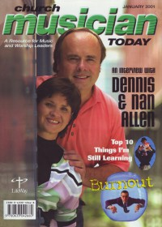

CMnexus
:
Contemporary Christian culture, music, and media.
Magazines
Profiles
Dove Awards
cmnexus.org
CM
nexus
→
Profiles
→
A
Dennis Allen
On the cover

January 2001
Church Musician Today
Media coverage:
Jan 2001 in
Church Musician Today
"An Interview With Dennis & Nan Allen", by
Kirk Kirkland
Albums & reviews:
1994
:
A Strange Way To Save The World
with
Nan Allen
2007
:
Bows of Holly
with
Nan Allen
Award Summary
(
Nominations
/
Wins
)
Dove Awards
1995 Dove Awards
Musical Album
:
A Strange Way To Save The World
1996 Dove Awards
Youth/Children's Musical
:
The Ride
1997 Dove Awards
Youth/Children's Musical
:
God Is In Control
Youth/Children's Musical
:
Code Red
1998 Dove Awards
Musical
:
The Message
2002 Dove Awards
Youth/Children's Musical
:
All I Want For Christmas
2004 Dove Awards
Youth/Children's Musical
:
The First Leon
2005 Dove Awards
Youth/Children's Musical
:
Voice Of Truth
2008 Dove Awards
Musical
:
Amazing Grace - My Chains Are Gone
Youth/Children's Musical
:
Bows Of Holly
CMnexus
(noun)
The magazine index
of modern music
and Christianity
© 2011 CMnexus. Last updated May 2025.
Contact:
Rants and other correspondence to:
editor -AT- cmnexus
-DØT- org
About